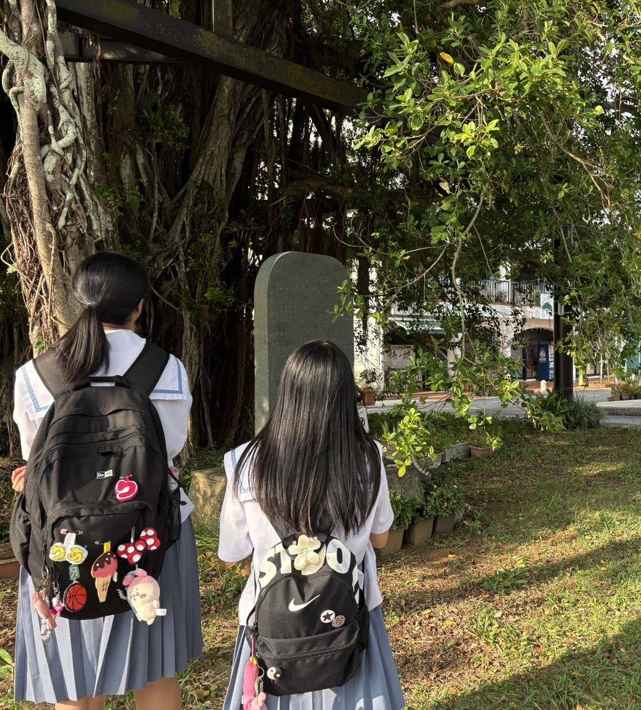
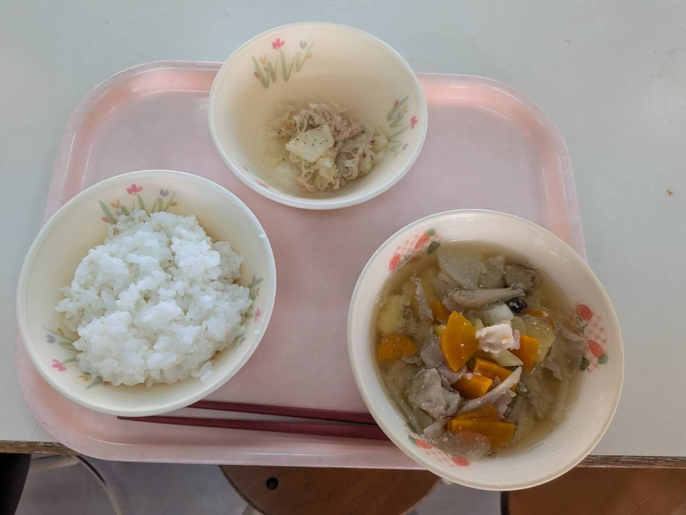
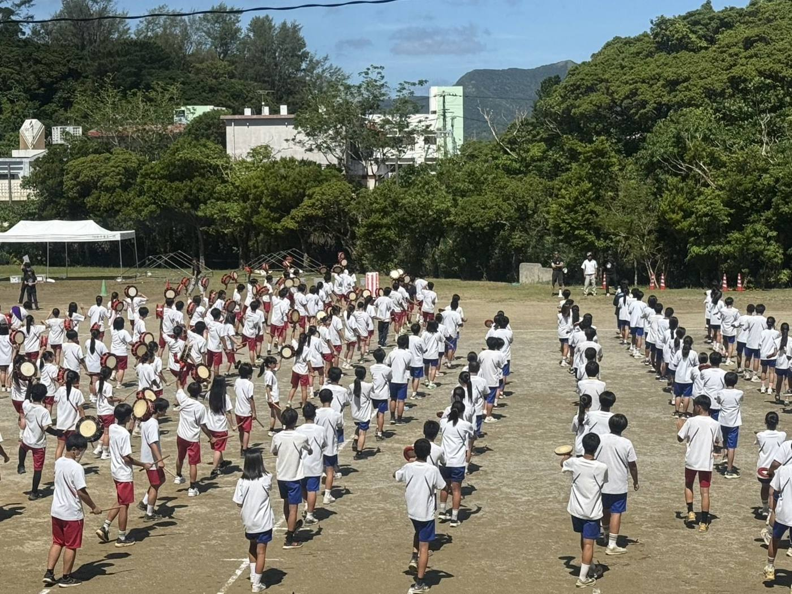
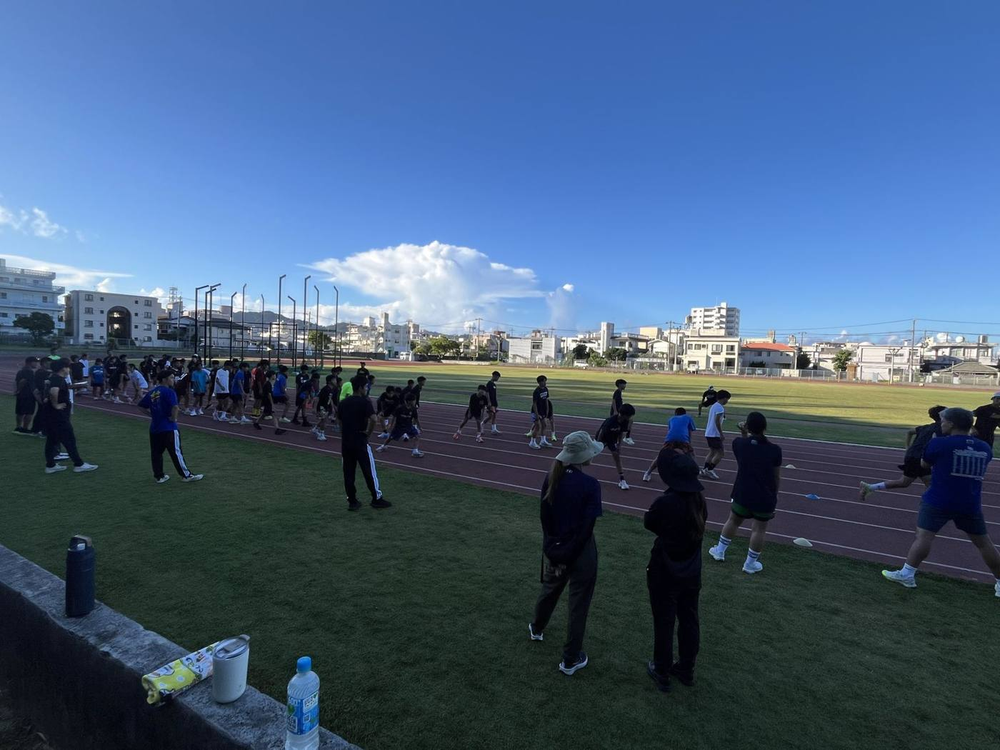
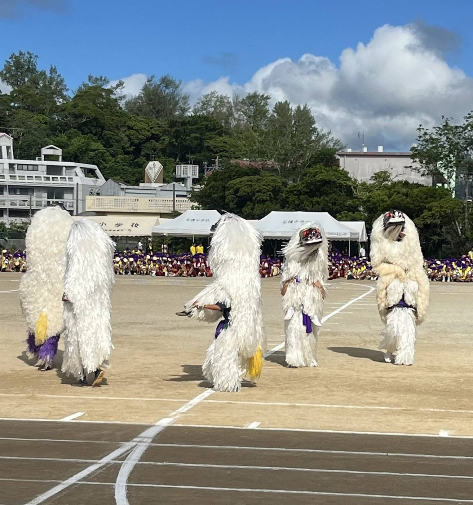

活動の紹介
校訓「学場真素」を、学校の外でも。名護中CSで今動いている活動です。それぞれの最近の記事も並べています。

毎週水曜の放課後
名護中まちなかクラブ
3年生の有志が名護の中心市街地へ出かけ、まちの課題を自分たちで調べる探究活動です。

月3回
朝ごはんPJ
地域のみなさんと一緒に、生徒に朝ごはんを届けます。

2026年10月に初回
てんたばる講座
名護の自然・文化・歴史をテーマにした講座です。

今年度から試行
商いの学校
名護の商店街と中学生をつなぎます。
放課後学習支援
準備中
放課後学習支援
地域のボランティアが、放課後の学習をサポートします。

語れー会は11月
講演会・特別授業
地域で活躍する大人が講師になり、仕事や経験を生徒に届けます。
名護中まちなかクラブ
3年生の有志が、毎週水曜の放課後に名護の中心市街地へ出かけ、まちの課題を自分たちで調べる探究活動です。名護まち会社の協力で、作ったものの展示販売や、名護桜祭りへの出店にも挑戦します。
最近の記事
朝ごはんPJ
地域のみなさんと一緒に、生徒に朝ごはんを届ける取り組みです。月3回開いています。これまでに9回実施し、のべ366人の生徒と84人のボランティアが関わりました。
最近の記事
てんたばる講座
名護の自然・文化・歴史をテーマにした講座です。2026年10月に今年度の初回を開きます。
最近の記事
商いの学校
名護の商店街と中学生をつなぐ取り組みです。市営市場をまわって商いを知る学びと、お店に弟子入りして働く体験の二つの段階で進めます。
最近の記事
放課後学習支援
地域のボランティアが、放課後の学習をサポートします。（準備中。始める時期が決まりしだい、お知らせします）
最近の記事
講演会・特別授業
外部の講師を招いた講演会などの記録です（例: 2026年6月 日笠智之先生の講演会）。地域で活躍する大人が講師になり、自分の仕事や経験を生徒に届ける「語れぇ会」も、ここに載せます（今年度は11月に開きます）。